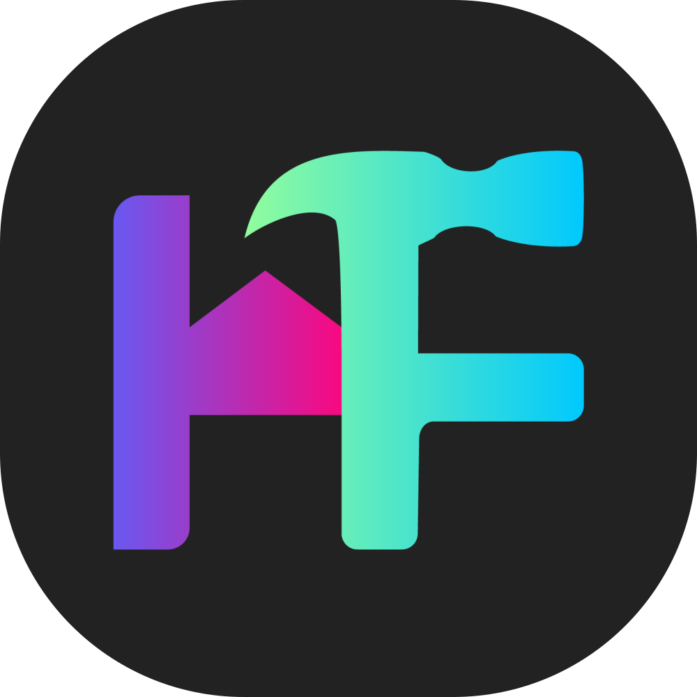

HomeForge Frontend
A modern smart home management platform built with Next.js, React, and TypeScript.
Table of Contents
- Overview
- Technology Stack
- Architecture
- Project Structure
- Core Systems
- Features
- Component Library
- State Management
- API Integration
- Theming
- Getting Started
Overview
HomeForge is a smart home management dashboard that provides:
- 🏠 Device Management — Register and monitor smart home devices
- 🔧 Device Builder — Design custom device configurations via drag-and-drop
- 🌐 Topology View — Visualize your connected device network
- ⚙️ Settings — User profiles, themes, and preferences
- 🛡️ Admin Panel — Room management, user roles, and device approvals
- 📱 Mobile Responsive — Fully optimized for phones, tablets, and desktops
Technology Stack
Core
| Package | Version | Purpose |
|---|---|---|
| Next.js | 16+ | App Router, SSR, file-based routing |
| React | 19 | UI library |
| TypeScript | 5+ | Static typing |
UI & Styling
| Package | Purpose |
|---|---|
| Tailwind CSS 4 | Utility-first CSS |
| shadcn/ui | Component library (Radix UI) |
| Lucide React | Icons |
| next-themes | Dark/Light mode |
| Framer Motion | Animations |
Visualization
| Package | Purpose |
|---|---|
| @xyflow/react | Node-based graph canvas |
| elkjs | Graph layout algorithms |
| @dnd-kit | Drag-and-drop |
Data & State
| Package | Purpose |
|---|---|
| TanStack Query | Server state & caching |
| React Context | Global client state |
| Sonner | Toast notifications |
Optimistic UI Patterns
Critical for Smart Home Operations: The device controls (SmartDeviceCard.tsx) implement a specialized optimistic UI pattern to ensure responsiveness while handling inherent network latency.
- Immediate Feedback: UI updates instantly on interaction (toggles, sliders).
- Smart Locking: During server synchronization, the UI "locks" to the optimistic state, ignoring stale data from concurrent refetches until the server confirms the new state.
- Visual Sync: A blurry overlay indicates processing, persisting until the backend state matches the frontend intent (or timeouts safely).
- Safety: Rapid-fire interactions are prevented during sync to avoid race conditions.
Architecture
Provider Hierarchy
RootLayout
└── ThemeProvider # Dark/Light mode
└── QueryProvider # React Query client
└── UserProvider # Auth & user state
└── {children}
└── Toaster # Global notifications
Request Flow
Component → React Query → apiClient.js → Backend API (port 8000)
↓
JWT Token Management
(localStorage: access/refresh)
Project Structure
/app
├── app/ # Next.js App Router
│ ├── layout.tsx # Root layout with providers
│ ├── page.tsx # Landing page
│ ├── globals.css # Global styles & CSS variables
│ ├── login/ # Login page
│ ├── register/ # Registration page
│ └── dashboard/ # Protected routes
│ ├── layout.tsx # Dashboard layout (sidebar + header)
│ ├── page.tsx # Dashboard home
│ ├── devices/ # Device registration wizard
│ ├── device-builder/ # Visual device designer
│ ├── device-types/ # Device type proposals
│ ├── topology/ # Network visualization
│ ├── settings/ # User preferences
│ └── admin/ # Admin-only routes
│ ├── rooms/ # Room management
│ ├── users/ # User management
│ ├── device-types/ # Approval queue
│ └── debug/ # Device state testing
│
├── components/ # Reusable components
│ ├── ui/ # shadcn/ui primitives (24 components)
│ ├── devices/ # Device-related components
│ ├── topology/ # Graph visualization
│ ├── notifications/ # Notification system
│ │ └── notification-center.tsx
│ ├── app-sidebar.tsx # Main navigation
│ ├── nav-user.tsx # User menu + notifications
│ ├── query-provider.tsx # React Query setup
│ ├── theme-provider.tsx # Theme configuration
│ └── user-provider.tsx # Auth context
│
├── hooks/ # Custom React hooks
│ └── use-mobile.ts # Mobile detection
│
├── lib/ # Utilities
│ ├── apiClient.js # API communication
│ ├── utils.ts # Helper functions (cn)
│ └── icons.ts # Icon mappings
│
└── public/ # Static assets
Core Systems
Authentication
JWT-based authentication with automatic token refresh:
1. Login (POST /api/login/) → Receive access + refresh tokens
2. Store tokens in localStorage
3. fetchWithAuth() adds Bearer token to requests
4. On 401 → Attempt token refresh → Retry or redirect to /login
Key Files:
lib/apiClient.js—login(),logout(),fetchWithAuth()components/user-provider.tsx—useUser()hook
Protected Routes
Dashboard routes check authentication in app/dashboard/layout.tsx:
useEffect(() => {
fetchProfile()
.then(() => setIsAuthorized(true))
.catch(() => router.push('/login'))
}, [])
Role-Based Access
| Role | Access |
|---|---|
owner | Full access + Admin Panel |
admin | Full access + Admin Panel |
user | Standard dashboard |
viewer | Read-only |
Notification System
Real-time notifications with backend API integration:
1. Bell icon in sidebar footer (next to user avatar)
2. Badge shows unread count (polls every 30 seconds)
3. Click to open popover with notification list
4. Mark as read, dismiss, or clear all
5. Click notification to navigate to relevant page
Notification Types:
| Type | Color | Description |
|---|---|---|
device_type_pending | Amber | Device type awaiting approval |
device_type_approved | Green | Device type approved |
device_type_denied | Red | Device type denied |
device_offline | Red | Device went offline |
device_online | Green | Device came online |
device_error | Orange | Device error |
system | Blue | System notification |
info | Blue | Information message |
warning | Orange | Warning alert |
error | Red | Error alert |
Priority Levels: low, normal, high, urgent
Features
Device Builder (/dashboard/device-builder)
Interactive canvas for designing device configurations:
- Drag & Drop Nodes — Desktop and mobile touch support
- Drag & Drop Widget Ordering — Reorder widgets with touch-friendly drag handles
- Node Connections — Top handle = output, Bottom = input
- Validation — Single MCU per device
- Glassmorphism UI — Translucent, modern node design
- Smart Auto-Generate — Automatically create UI widgets from topology with intelligent sizing:
- Single sensors get large row layout for prominence
- Multiple sensors use square grid with visual hierarchy
- Motion sensors stay medium (binary state)
- Temp/Humidity pairs get matching sizes
- Control count determines switch sizing
- Sensor Widgets — Temperature, Humidity, Motion, Light, CO2 displays
- Flexible Layouts — Row or Square widget styles with configurable sizes (Small/Medium/Large)
- Size Options — Small, Medium, Large affect widget dimensions:
- Square: Large spans 2x2 grid cells
- Row: Small (48px), Medium (56px), Large (80px) height
Smart Device Cards
Device cards support intelligent behavior:
- Single Toggle Devices — Tap the entire card to toggle on/off
- Multi-Control Devices — Individual toggles and sliders for each relay
- Sensor Displays — Read-only widgets for monitoring (no sliders for sensors)
- Widget Types:
TOGGLE— On/off switch for relaysSLIDER— Range control (brightness, speed, etc.)TEMPERATURE— Color-coded temperature displayHUMIDITY— Humidity with progress barMOTION— Motion detection status with alertsLIGHT— Light level (lux) or bright/dark indicatorCO2— Air quality with quality badges
Dashboard Grid & Layout (/dashboard)
The main dashboard features a customizable drag-and-drop device grid with folder support and persistent layouts:
Grouping Modes
- All Devices — Custom drag-and-drop grid with folders (default layout)
- Group by Room — Devices grouped under room headings
- Group by Type — Devices grouped by device type
- Group by Status — Devices sorted into Online / Offline / Error sections
- Sort by Name — Flat alphabetical grid
- Edit Layout — Accessible from the grouping dropdown; switches to All Devices and enters edit mode simultaneously
Drag-and-Drop Editing (via @dnd-kit)
- Whole-card dragging — Grab from anywhere on a card to drag it (no small handle required)
- Hover grip icon — A
GripVerticalicon fades in on hover (edit mode only), dynamically sized to match the card height (h-1/3, clampedmin-h-5/max-h-12) - 3-zone drop targets — Each target card is split into three horizontal zones:
- Left edge (25%) — Inserts the dragged item before the target; shown with a glowing vertical line centered in the gap between cards
- Center (50%) — Merges into a folder (device→device or device→folder); target scales up with a pulsing primary ring, drag overlay shrinks toward it (iOS-style)
- Right edge (25%) — Inserts the dragged item after the target; shown with a glowing vertical line centered in the gap
- No auto-shifting — Grid items stay in place during drag (CSS transforms disabled), preventing the "items jumping around" glitch
- Absorb animation — On merge drop, the target compresses (scale 95%, 60% opacity) for 300ms before the folder is created
Device Folders
- Creation — Drag a device onto another device's center zone to create a folder (max 4 devices per folder)
- Adding — Drag a device onto a folder's center zone to add it
- Removing — Remove individual devices from within the folder panel
- Renaming — Inline folder name editing
- Dissolving — Break a folder back into individual devices
- Collapsed preview — 2×2 icon grid with folder name and device count badge
- Expanded panel — Bottom-sheet style on mobile, narrow side panel on desktop with 2-column device grid
Layout Persistence
- API-backed — Layouts saved to
PUT /api/dashboard-layout/with debounced writes (800ms) - Offline fallback — Falls back to
localStorage(homeforge_dashboard_layout) when API is unavailable - Flush on exit — Layout is immediately saved when exiting edit mode or when the component unmounts
- New device reconciliation — New devices are automatically appended and saved immediately (bypasses debounce)
- Device order — Grouping preference persisted via
PATCH /api/device-order/
Admin Layout Controls (edit mode toolbar)
- Set as Default for All — Push current layout as shared default (
PUT /api/admin/dashboard-layout/) - Revert to Admin Default — Delete personal layout, fall back to admin-set shared layout
- Reset Layout — Reset to flat default with no folders
Topology View (/dashboard/topology)
Network visualization of connected devices:
- Radial Layout — Gateway-centered star topology
- Live Data — Fetched from
/topology/endpoint - Status Indicators — Online (green glow) / Offline
Device Management (/dashboard/devices)
Three-step registration wizard:
- Select Device Type
- Choose Room
- Configure Details
Settings (/dashboard/settings)
- Profile (name, email, avatar, password)
- Theme (Dark/Light)
- Accent color picker
Admin Panel (/dashboard/admin)
Admin-only features for system management:
Rooms (/dashboard/admin/rooms)
- Create, edit, and delete rooms
- Assign rooms to device locations
Users (/dashboard/admin/users)
- View all registered users
- Manage user roles (owner, admin, user, viewer)
Device Types (/dashboard/admin/device-types)
- View all device type definitions
- Filter by status: All, Approved, Pending, Denied
- Deep linking support:
?filter=pendingauto-selects filter - Approve or deny pending device type submissions
- Review hardware topology before approval
Approvals (/dashboard/admin/approvals)
- Quick access to pending device types requiring review
Debug Panel (/dashboard/admin/debug)
Developer tool for testing device states:
- Device List: All registered devices displayed as collapsible cards
- Clickable Cards: Click anywhere on a device card to expand/collapse
- Status Control:
- Toggle between Online and Offline states
- Quick buttons for instant status changes
- Status saved to backend via API
- State Editor:
- JSON textarea to modify
current_state - Validation with error highlighting
- Quick toggles: "All ON" / "All OFF" for relay states
- JSON textarea to modify
- Device Deletion: Delete devices with confirmation dialog
- Visual Feedback:
- Status indicator dots (green = online, gray = offline)
- Hover states and ring highlights for selected cards
- Loading states during API operations
Notification Center
Accessible from the sidebar footer (bell icon next to user avatar):
- Real-time Updates — Polls unread count every 30 seconds
- Popover UI — Clean notification list with scroll area
- Actions:
- Mark individual as read (click notification)
- Mark all as read
- Dismiss individual notifications
- Clear all read notifications
- Navigation — Click to go to relevant page (e.g., device types approval)
- Priority Badges — High/urgent notifications highlighted
- Time Display — Relative timestamps from API (
time_ago)
Mobile Responsiveness
All pages follow consistent responsive patterns:
Layout Patterns
| Pattern | Mobile | Tablet+ |
|---|---|---|
| Page Padding | p-4 | p-6 |
| Headers | Stacked (column) | Inline (row) |
| Buttons | Full width | Auto width |
| Tables | Horizontal scroll | Full display |
| Grids | 1 column | 2-5 columns |
Breakpoints
| Breakpoint | Width | Usage |
|---|---|---|
| Default | 0-639px | Mobile - single column, stacked layouts |
sm | 640px+ | Large phones - 2 columns, horizontal buttons |
md | 768px+ | Tablets - increased padding |
lg | 1024px+ | Desktop - sidebars, full layouts |
xl | 1280px+ | Large desktop - expanded grids |
UX Improvements
Interaction Polish
| Feature | Implementation | File |
|---|---|---|
| Non-selectable device cards | select-none class prevents accidental text selection when clicking/dragging | SmartDeviceCard.tsx |
| Smooth dropdown animations | GPU-accelerated with will-change, opacity fade, forwards fill | globals.css |
| Mobile breadcrumb visibility | First (Dashboard) + current page always visible on mobile; middle items hidden | dynamic-breadcrumbs.tsx |
| No redundant breadcrumbs | Removed static "HomeForge" root breadcrumb — "Dashboard" serves as the root link | dynamic-breadcrumbs.tsx |
Animation Performance
The sidebar collapsible animations use optimized CSS:
.collapsible-content[data-state="open"] {
animation: collapsible-open 0.2s ease-out forwards;
will-change: height, opacity;
}
.collapsible-content[data-state="closed"] {
animation: collapsible-close 0.15s ease-in forwards;
will-change: height, opacity;
}
Key optimizations:
will-changepromotes elements to GPU layerforwardsfill mode prevents snap-back on completion- Opacity fade (0 → 1) creates smoother visual transition
- Faster close animation (0.15s) feels more responsive
Component Library
shadcn/ui Components (components/ui/)
| Component | Description |
|---|---|
button | Action buttons with variants |
card | Content containers |
dialog | Modal dialogs |
input | Text inputs |
select | Dropdowns |
switch | Toggle controls |
slider | Range inputs |
table | Data tables |
tooltip | Hover information |
popover | Floating content |
command | Command palette |
dropdown-menu | Action menus |
sheet | Slide-out panels |
skeleton | Loading placeholders |
Custom Components
| Component | Purpose |
|---|---|
AppSidebar | Main navigation sidebar |
NavUser | User dropdown menu + notification bell |
NotificationCenter | Bell icon with popover notification list |
SmartDeviceCard | Device display card with smart toggle behavior |
SensorWidgets | Temperature, Humidity, Motion, Light, CO2 displays |
IconPicker | Icon selection UI |
TopologyCanvas | React Flow wrapper |
TopologyBuilderNode | Network device node (type-based coloring) |
BuilderStyleNode | Glassmorphism graph node |
DeviceUICreator | Widget builder with auto-generation |
SortableSquareWidget | Draggable square widget (dnd-kit) |
SortableRowWidget | Draggable row widget (dnd-kit) |
State Management
Server State (React Query)
Configured in components/query-provider.tsx:
const queryClient = new QueryClient({
defaultOptions: {
queries: {
staleTime: 5000, // Refetch after 5 seconds
refetchOnWindowFocus: true, // Refresh on tab focus
},
},
})
Usage:
// Queries
const { data, isLoading } = useQuery({
queryKey: ['devices'],
queryFn: () => apiClient.get('/devices/')
})
// Mutations
const mutation = useMutation({
mutationFn: (data) => apiClient.post('/devices/', data),
onSuccess: () => queryClient.invalidateQueries(['devices'])
})
Client State (Context)
UserContext (components/user-provider.tsx):
const {
user, // Current user data
isLoading, // Loading state
logout, // Logout function
updateAccentColor, // Theme customization
refreshUser // Refetch profile
} = useUser()
Dashboard Loading State
The dashboard uses a module-level cache to prevent UI flicker:
// Module-level cache persists across component remounts
let cachedDevicesExist = false;
// Inside component:
if (devices.length > 0) {
cachedDevicesExist = true;
}
// Logic:
// - Show skeleton: during initial load OR if devices were empty but we had them before
// - Show "no devices": only if we've NEVER had devices
// - Show devices: when loaded with devices
This prevents the "no devices" flash that can occur when:
- API refetch temporarily returns empty (401 errors, network issues)
- Component remounts during navigation
- React Query cache is stale
API Integration
API Client (lib/apiClient.js)
import { fetchDevices, updateDevice, updateDeviceState, deleteDevice } from '@/lib/apiClient'
// Fetch all devices
const devices = await fetchDevices()
// Update device properties (status, name, etc.)
await updateDevice(deviceId, { status: 'online' })
// Update device state (current_state JSON)
await updateDeviceState(deviceId, { relay_1: true, brightness: 75 })
// Delete a device
await deleteDevice(deviceId)
Notification API
import {
fetchNotifications,
fetchUnreadNotificationCount,
markNotificationAsRead,
markAllNotificationsAsRead,
deleteNotification,
bulkDeleteNotifications
} from '@/lib/apiClient'
// Get notifications (with optional filters)
const { results, count } = await fetchNotifications({ is_read: false, page: 1 })
// Get unread count for badge
const { unread_count } = await fetchUnreadNotificationCount()
// Mark as read
await markNotificationAsRead(notificationId)
await markAllNotificationsAsRead({ notification_type: 'device_type_pending' })
// Delete notifications
await deleteNotification(notificationId)
await bulkDeleteNotifications({ is_read: true }) // Delete all read
Backend URL
Auto-detected based on current hostname:
// Browser: Uses current protocol + hostname:8000
// Server: Falls back to http://localhost:8000
Error Handling
Django REST Framework errors are normalized:
// Field errors → Joined message
// detail string → Thrown as-is
// non_field_errors → Combined message
Theming
Dark Mode
Managed by next-themes:
<ThemeProvider
attribute="class"
defaultTheme="system"
enableSystem
/>
Accent Colors
Customizable via UserProvider:
const ACCENT_COLORS = {
default: "oklch(0.205 0 0)",
violet: "oklch(0.5 0.2 280)",
blue: "oklch(0.5 0.2 250)",
green: "oklch(0.6 0.15 150)",
orange: "oklch(0.6 0.15 50)",
pink: "oklch(0.6 0.2 340)",
cyan: "oklch(0.6 0.15 200)",
}
Colors are applied via CSS custom properties (--primary, --ring).
Getting Started
Prerequisites
- Node.js 18+
- Backend API running on port 8000
Installation
# Install dependencies
npm install
# Start development server
npm run dev
# Build for production
npm run build
# Start production server
npm start
Available Scripts
| Command | Description |
|---|---|
npm run dev | Development server (hot reload) |
npm run build | Production build |
npm start | Production server |
npm run lint | ESLint |
Environment
The frontend auto-connects to the backend:
- Dev:
http://localhost:8000 - Prod: Same hostname, port 8000